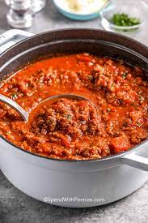
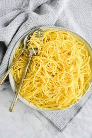
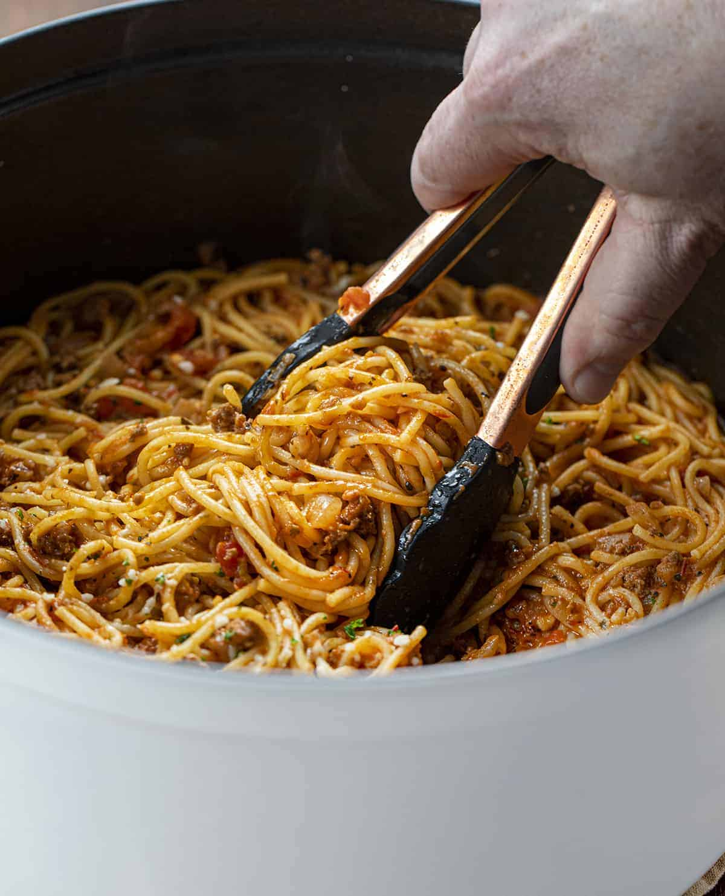

Spaghetti
Origin:
Italy
Source:
Own Recipe
Category:
Main Dish
Italian pasta is the quintessence of culinary delight, a versatile dish that has captured the hearts of food lovers around the globe. Each strand or shape serves as a canvas, ready to embrace a variety of sauces, from the rich and creamy Alfredo to the robust and hearty Bolognese. Crafted from the simplest of ingredients, flour and water, pasta is the epitome of Italian tradition, transforming humble elements into an array of dishes that range from the elegantly simple spaghetti aglio e olio to the decadent layers of lasagna. Al dente or soft, garnished with a sprinkle of Parmesan and fresh basil leaves, Italian pasta remains a timeless comfort food, a dish that carries the soul of Italy in every bite.
Recipe Ingredients:
- Dry spaghetti noodles
- Pasta Sauce
- Cheese
Recipe Steps:
- In a pan, add the pasta sauce and just enough water to cover the bottom of the pan. Bring the mixture to a boil;
- Add the spaghetti noodles to the pan and cook according to the packaging instructions;
- Once the noodles are cooked, plate on a pan and add cheese on top.
Additional Images:



Homemade Mac & Cheese
Origin:
Northern Europe
Source:
https://www.delish.com/cooking/recipe-ideas/a44763401/mac-and-cheese-recipe/
Category:
Main Dish
Macaroni and cheese, commonly known as mac & cheese, is a comfort food staple that has captured the hearts of people all over the world. Originating from Europe and popularized in the United States, this dish consists of elbow macaroni pasta smothered in a creamy cheese sauce. The simplicity of its ingredients—pasta, cheese, and often a touch of butter or milk—belies a rich, complex flavor that has made it a favorite for both quick weeknight dinners and festive holiday gatherings.
Recipe Ingredients:
- Macaroni
- Butter and flour
- Milk
- Cheese
- Seasonings
- Bread crumbs
Recipe Steps:
- Preheat oven to 375°. Grease a 13"x9" baking dish with butter. In a large pot of boiling salted water, cook macaroni, stirring occasionally, until al dente, 5 to 6 minutes. Drain;
- In a large saucepan over medium heat, melt 1 stick butter. Sprinkle flour over and cook, stirring, until slightly golden, 2 to 3 minutes. Pour in milk and whisk until combined. Add mustard powder; season with salt and pepper. Bring to a simmer over medium-high heat and cook, stirring, until sauce starts to thicken, about 2 minutes;
- Remove pan from heat and whisk in cheddar, Gruyère, and 1 cup Parmesan until melted and smooth. Stir in macaroni and transfer to the prepared dish;
- In a small bowl, combine panko, oil, and remaining 1/2 cup Parmesan. Sprinkle over macaroni; season with more pepper;
- Bake mac and cheese until bubbly and golden, 25 to 30 minutes. Let cool for 10 minutes.
Additional Images:
Guacamole
Origin:
Mexico
Source:
Own Recipe
Category:
Appetizer
Guacamole is a Mexican dip made from mashed avocados, tomatoes, onions, cilantro, lime juice, and chili pepper, creating a creamy, zesty, and versatile condiment often enjoyed with tortilla chips, tacos, and more.
Recipe Ingredients:
- Avocado
- Lime
- Salt
- Onion
- Tomato
- Cilantro
Recipe Steps:
- Slice three ripe avocados in half;
- Scoop them into a mixing bowl;
- Use a fork to gently mash them;
- Add the onions, tomatoes, cilantro, jalapeno pepper, garlic, lime juice and salt and stir everything together.
Additional Images: